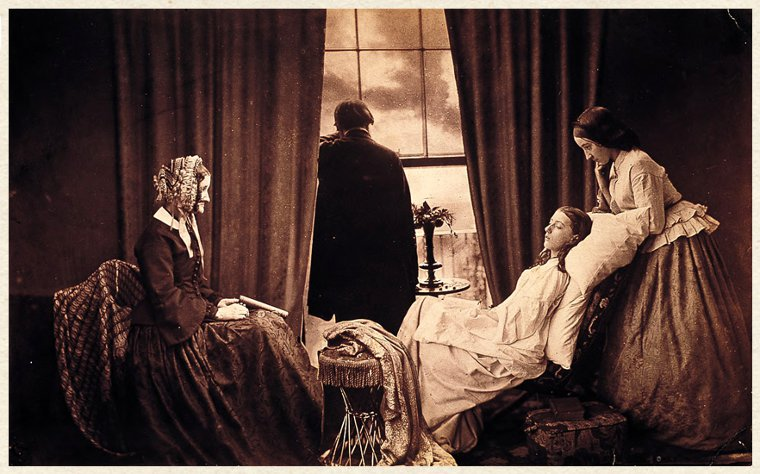

Feature
Positioning relatives
In 1958, English pictorial photographer Henry Peach Robinson created the world’s first photomontage by combining five different negatives to make one complete print of a young girl on her deathbed. “Fading Away”—Robinson’s first and most famous composite photo—depicts a young girl dying of consumption and was controversial when it was exhibited, with many believing it was not a suitable subject for photography.